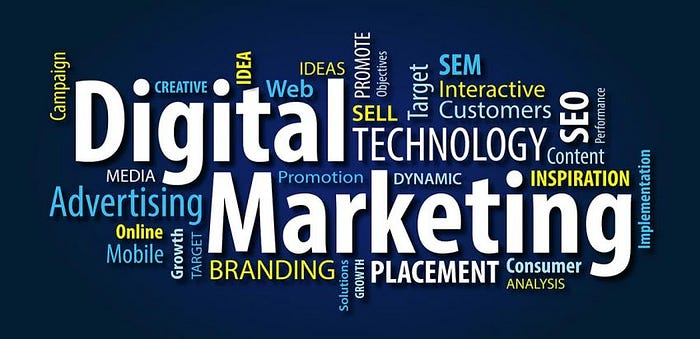

The Comprehensive Guide to Digital Marketing: Strategies, Tools, and Best Practices for 2024

In an age where digital presence is crucial for business success, digital marketing has emerged as an essential component of modern business strategy. From small startups to global corporations, effective digital marketing can drive brand awareness, generate leads, and foster customer loyalty. As we navigate through 2024, understanding the latest trends, tools, and best practices in digital marketing is crucial for anyone looking to thrive in the digital landscape. This comprehensive guide explores the core components of digital marketing, current trends, essential tools, and actionable strategies to help you elevate your digital marketing efforts.
The Evolution of Digital Marketing
1. The Early Days of Digital Marketing
Digital marketing began with the rise of the internet and the advent of email marketing. Early digital strategies were simple, focusing on basic website optimization and email campaigns. The primary goal was to drive traffic to websites and generate leads through relatively straightforward tactics.
2. The Rise of Search Engine Optimization (SEO)
As the internet grew, so did the complexity of digital marketing. Search Engine Optimization (SEO) became a key focus, with businesses striving to improve their rankings on search engines like Google. This era saw the emergence of keywords, backlinks, and content optimization as critical elements of digital strategy.
3. The Social Media Revolution
The advent of social media platforms such as Facebook, Twitter, and Instagram revolutionized digital marketing. Social media provided new avenues for engaging with audiences, running targeted ads, and building brand communities. Influencer marketing also began to take off, leveraging individuals with large followings to promote products and services.
4. The Era of Data-Driven Marketing
In recent years, digital marketing has increasingly focused on data-driven strategies. Advanced analytics tools and platforms allow businesses to track user behavior, measure campaign performance, and make data-informed decisions. Personalization, automation, and customer journey mapping have become integral to effective digital marketing.
Key Components of Digital Marketing
1. Search Engine Optimization (SEO)
SEO involves optimizing your website and content to rank higher in search engine results pages (SERPs). Effective SEO strategies include:
- Keyword Research: Identifying the terms and phrases that potential customers use to search for products or services.
- On-Page Optimization: Optimizing individual web pages with relevant keywords, meta tags, and high-quality content.
- Off-Page Optimization: Building backlinks from reputable sites to improve your site’s authority and ranking.
- Technical SEO: Ensuring that your website’s technical aspects, such as site speed and mobile-friendliness, are optimized for search engines
2. Content Marketing
Content marketing focuses on creating and distributing valuable, relevant, and consistent content to attract and retain a clearly defined audience. Key elements include:
-Blogging: Publishing informative and engaging blog posts to drive traffic and establish authority.
Video Marketing: Creating videos to engage audiences and convey messages in a dynamic format.
- Infographics: Designing visual content to simplify complex information and increase shareability.
- Ebooks and Whitepapers: Offering in-depth resources to capture leads and provide value.
3. Social Media Marketing
Social media marketing involves leveraging social media platforms to promote your brand and engage with your audience. Key strategies include:
- Content Creation: Developing and sharing content tailored to each platform’s audience.
- Paid Advertising: Running targeted ads on platforms like Facebook, Instagram, and LinkedIn to reach specific demographics.
- Community Management: Engaging with followers, responding to comments, and fostering online communities.
- Influencer Partnerships: Collaborating with influencers to expand reach and build credibility.
4. Email Marketing
Email marketing involves sending targeted emails to nurture leads, retain customers, and drive conversions. Effective email marketing strategies include:
- Segmentation: Dividing your email list into segments based on demographics, behavior, or preferences to deliver personalized content.
- Automation: Setting up automated email campaigns for welcome messages, abandoned cart reminders, and follow-ups.
- A/B Testing: Testing different email elements (subject lines, content, calls to action) to optimize performance.
- Analytics: Monitoring open rates, click-through rates, and conversions to refine your email strategy.
5. Pay-Per-Click (PPC) Advertising
PPC advertising involves placing ads on search engines or other platforms and paying only when users click on them. Key components include:
- Keyword Bidding: Selecting relevant keywords and bidding on them to have your ads displayed in search results.
- Ad Copywriting: Crafting compelling ad copy that encourages users to click through to your website.
- Landing Pages: Creating optimized landing pages that align with ad content and drive conversions.
- Campaign Management: Monitoring and adjusting campaigns to optimize performance and return on investment (ROI).
6. Analytics and Data Analysis
Data analysis is crucial for understanding campaign performance and making informed decisions. Key aspects include:
- Web Analytics: Using tools like Google Analytics to track website traffic, user behavior, and conversion metrics.
- Conversion Tracking: Measuring the effectiveness of marketing efforts in driving desired actions, such as purchases or sign-ups.
- Reporting: Creating detailed reports to analyze performance, identify trends, and inform future strategies.
Current Trends in Digital Marketing
1. Artificial Intelligence (AI) and Machine Learning
AI and machine learning are transforming digital marketing by enabling more personalized and efficient strategies.
Applications include:
- Chatbots: Using AI-powered chatbots to provide real-time customer support and engage with visitors.
- Predictive Analytics: Leveraging machine learning algorithms to forecast customer behavior and optimize marketing efforts.
-Content Generation: Using AI tools to automate content creation, such as generating blog posts or social media updates.
2. Voice Search Optimization
With the growing popularity of voice-activated devices like Amazon Alexa and Google Assistant, optimizing for voice search is becoming increasingly important. Key strategies include:
- Natural Language Processing (NLP):Tailoring content to match conversational search queries.
- Featured Snippets: Structuring content to appear in featured snippets, which are often used in voice search results.
- Local SEO: Ensuring that local information is optimized for voice searches with local intent.
3. Video Content Dominance
Video content continues to dominate digital marketing, with platforms like YouTube, TikTok, and Instagram Reels driving engagement. Key trends include:
- Short-Form Videos: Creating engaging, bite-sized videos that capture attention quickly.
- Live Streaming: Using live video to connect with audiences in real-time and drive engagement.
- Interactive Videos: Incorporating interactive elements, such as clickable links and polls, to enhance viewer interaction.
4. Privacy and Data Protection
With growing concerns about data privacy, marketers must prioritize data protection and transparency. Key considerations include:
- Compliance: Adhering to regulations such as the General Data Protection Regulation (GDPR) and the California Consumer Privacy Act (CCPA).
- Transparency: Clearly communicating data collection practices and obtaining explicit consent from users.
- Data Security: Implementing robust security measures to protect customer data from breaches and unauthorized access.
5. Omnichannel Marketing
Omnichannel marketing focuses on providing a seamless and integrated experience across multiple channels.
Key strategies include:
-Consistent Messaging: Ensuring that brand messaging is cohesive across all touchpoints, from social media to email to in-store experiences.
- Cross-Channel Integration: Coordinating marketing efforts across channels to create a unified customer journey.
- Customer Data Platforms (CDPs): Using CDPs to consolidate customer data from various sources and deliver personalized experiences.
Essential Tools for Digital Marketing
1. SEO Tools
- Google Analytics: A comprehensive tool for tracking website traffic, user behavior, and conversion metrics.
-SEMrush: An all-in-one SEO tool for keyword research, competitive analysis, and site auditing.
- Moz: A suite of SEO tools for keyword tracking, link building, and site optimization.
2. Content Marketing Tools
- HubSpot:A content management system (CMS) with tools for blogging, lead generation, and marketing automation.
- Canva: A user-friendly design tool for creating visually appealing graphics and social media content.
-Grammarly: A writing assistant that helps improve grammar, spelling, and style in content creation.
3. Social Media Marketing Tools
- Hootsuite: A social media management platform for scheduling posts, monitoring engagement, and analyzing performance.
- Buffer: A tool for managing multiple social media accounts, scheduling posts, and tracking analytics.
- Sprout Social: A comprehensive social media management platform with features for engagement, reporting, and team collaboration.
4. Email Marketing Tools
- Mailchimp: An email marketing platform with tools for campaign creation, automation, and analytics.
- Constant Contact: A tool for creating and managing email campaigns, with features for segmentation and reporting.
- SendGrid:A cloud-based email service for transactional and marketing emails, with advanced analytics and deliverability tools.
5. Analytics and Data Tools
- Google Data Studio: A tool for creating customizable reports and dashboards with data from various sources.
- Hotjar: A tool for analyzing user behavior through heatmaps, session recordings, and surveys.
- Kissmetrics: An analytics platform focused on tracking customer behavior and providing actionable insights.
Best Practices for Digital Marketing
1. Develop a Clear Strategy
A well-defined digital marketing strategy is essential for achieving your goals. Outline your objectives, target audience, key channels, and metrics for success. Regularly review and adjust your strategy based on performance and market changes.
2. Focus on Customer Experience
Delivering an exceptional customer experience should be at the core of your digital marketing efforts. Personalize content, streamline user journeys, and provide valuable interactions to build trust and loyalty.
3. Leverage Data and Analytics
Data-driven decision-making is crucial for optimizing digital marketing efforts. Use analytics tools to track performance, measure ROI, and identify opportunities for improvement. Continuously analyze data to refine strategies and enhance results.
4. Embrace Innovation
Stay ahead of the curve by embracing new technologies and trends. Experiment with emerging tools and techniques, such as AI, AR/VR, and interactive content, to engage your audience and differentiate your brand.
5. Prioritize Ethical Practices
Ethical marketing practices build trust and credibility with your audience. Be transparent about data collection, avoid deceptive tactics, and prioritize customer privacy and consent. Ethical marketing fosters long-term relationships and positive brand perception.
Conclusion
Digital marketing is a dynamic and multifaceted field that requires a strategic approach and a willingness to adapt to changing trends. By understanding the key components of digital marketing, staying informed about current trends, leveraging essential tools, and adhering to best practices, businesses and marketers can create effective campaigns that drive growth and success. As we move through 2024 and beyond, embracing innovation and maintaining a customer-centric approach will be key to thriving in the ever-evolving digital landscape. Whether you’re a seasoned marketer or just starting, this guide provides the foundation for navigating the exciting world of digital marketing and achieving your goals in the digital age.
Digital Marketing
Elevate your marketing game with Avanteia’s Digital Marketing course! Master SEO, social media strategies, and content creation, all while learning from industry leaders. Our hands-on training prepares you to navigate the fast-paced world of digital marketing, with certifications to boost your career prospects.